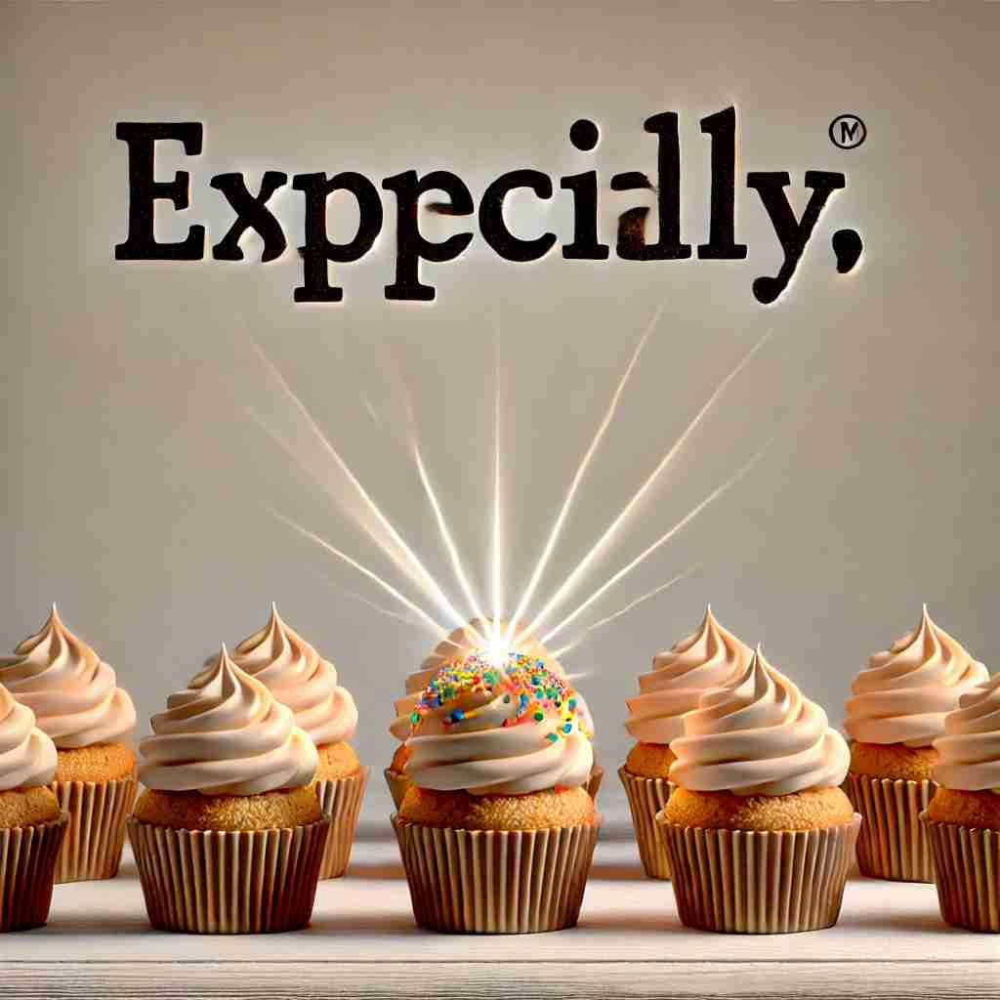

💬 She especially likes strawberries more than any other fruit. 她特别喜欢草莓，胜过其他任何水果。
💬 The art exhibitions are especially popular on weekends. 艺术展览在周末特别受欢迎。

💬 The athletes train especially in sports to improve their skills. 运动员特别在体育方面进行训练以提升他们的技能。

💬 This cupcake is especially this cupcake that everyone loves. 这款杯子蛋糕尤其是大家都喜欢的那款。
🧠 想象'especially'是一个放大镜，它能让某些事物在我们的注意力中变得更大、更突出。无论是程度更深、目的更明确，还是更值得强调的对象或例子，都可以用这个放大镜的概念来理解。这个核心意象贯穿了'especially'的各种用法，有助于更好地记忆和运用这个词。
🔈 [ɪˈspeʃəlɪ]
🗝️ adv. to a greater degree than usual or than others 比平常或其他情况下更加
🎭 在一个熙熙攘攘的市场里，琳达正兜售她的手工香皂。在一片赞美声中，她发现了一个特别的客户，对她的香皂赞不绝口："这款玫瑰香皂闻起来especially好，比其他所有的都更让人心旷神怡。"
💬 The museum was especially busy during the holiday season. 博物馆在假期期间特别繁忙。
🌳 由基本词 "special"（特别的）加上修饰副词的后缀 "-ly" 和强调前缀 "e-" 组成，构成一个副词，表示 "尤其，特别"。
🕸️ 1.special: 特别的 2.specialist: 专家 3.specialty: 专业
💡 记忆 "especially" 时，可以联想为 "extra special" 的组合，表示在许多特殊情况中特别突出的部分。通过将 "特别" 和 "尤其" 的概念联系起来，更容易记住它的意思。